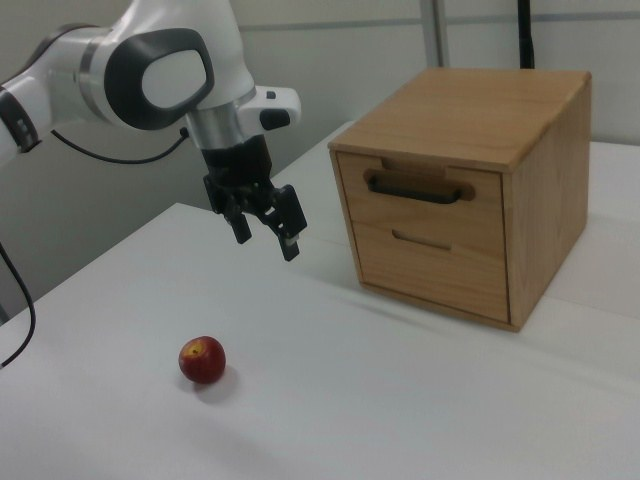

RoboMIND · franka_3rgb__pick_apple_into_drawer/0923_164719
Pick apple into drawer

Annotation
From the dedicated visual review of this video (concise_action_v1). Plain text · JSON
Observed outcome
- Status
visually_completed
- Description
The top drawer starts closed (frame 0), is gripped at the handle (about frames 84-104), pulled out toward the camera and image left (frames 122-172) to a partly open position that stays constant afterwards, and the gripper opens and withdraws (frames 172-190). The drawer remains open and empty; the apple is untouched on the table through frame 191.
Hand roles
- Active visible arm
Single arm opens the drawer by gripping its handle and pulling, releases, later picks up the apple, places it in the drawer, and pushes the drawer closed.
- Other arm
None.
Coordination
Single arm acts alone; no second arm, hand transfer or human interaction.
Robot-side evidence
- Visible description
Single Franka Emika Panda arm with a parallel-jaw gripper, base off-frame to image left; the arm enters from the left edge in camera_right view and reaches toward the drawer on the right. Only one arm exists.
- Source annotation
No publisher language instruction exists for this episode; the task name comes only from the folder name.
- Visual certainty
Not a humanoid; left/right anatomy is not needed. The usable prompts refer to the single visible robotic arm.
Chronology
| Frames | Observation |
|---|---|
| 0–20 | Arm held above table at left of the wooden two-drawer cabinet with gripper open; red apple on table in front of it; drawers closed. |
| 22–60 | Arm swings toward the cabinet and moves the gripper in front of the top drawer handle (blue wrist light visible from about frame 38). |
| 62–100 | Gripper aligned with the top drawer handle; telemetry gripper value rises from 0 at about frame 70 to 0.83 by frame 100, consistent with the fingers closing on the handle (frames 84, 94, 104 viewed at native resolution). |
| 102–120 | Gripper holds the handle; drawer still closed. |
| 122–172 | Arm pulls back to image left and the top drawer slides out toward the camera; by about frame 144 it is clearly open and by 172 it is at its final extension. |
| 172–190 | Gripper value drops to 0 (about frames 160-180) as the fingers release the handle; the arm lifts and withdraws up and to image left, clear of the drawer. Drawer stays open and empty. |
| 192–214 | Arm descends toward the apple; selected clip stops before this approach. |
| 216–250 | Gripper lowers onto and grasps the apple (gripper value about 0.08 from about frame 260, consistent with a closed grasp on a wider object). |
| 252–310 | Apple lifted and carried upward and right toward the open drawer. |
| 312–350 | Apple lowered into the open drawer; gripper opens at about frame 350 and apple rests in the drawer. |
| 352–382 | Gripper withdraws up and left; apple visible inside the open drawer. |
| 384–434 | Arm returns to the drawer handle, gripper closes (gripper value about 0.99 from frame 420). |
| 436–456 | Arm pushes the drawer shut; drawer is closed by about frame 454 and apple no longer visible. |
| 458–502 | Gripper stays at the closed drawer handle, then opens (gripper value falls after about frame 510). |
| 504–599 | Arm withdraws up and left and settles near the starting pose above the table; drawer closed, table clear. |
Clip selection
The episode contains three independent subtasks (open drawer, move apple into drawer, close drawer). The first complete meaningful manipulation is opening the top drawer: gripper reaches the handle, grips it, pulls the drawer open, releases and withdraws up and left. Telemetry shows the gripper value falling to 0 by about frame 180 and the gripper is visibly clear of the drawer at frames 184-190. Selection ends at frame 191, before the arm descends toward the apple (approach visible from about frame 196-200; apple unchanged on the table throughout).
Differences from the publisher annotation
- There is no publisher language instruction for this episode; the task name 'pick_apple_into_drawer' comes only from the folder name.
- The folder name describes picking the apple into the drawer, but the video also contains opening the drawer first and closing it after placement. The selected shorter clip covers only the drawer opening, per the first-complete-manipulation rule; the full-sequence prompt covers all three phases.
Uncertainties
- Whether the closing and holding gripper at the handle in frames 84-150 is a pinch grip of the handle bar or a hook behind it is not resolvable at this resolution; the prompt uses 'grasps the handle' based on the gripper value rising and the drawer following the gripper.
- The apple's presence inside the closed drawer at the end is inferred (seen inside until closure, never seen leaving), not directly visible.
- The boundary at frame 192 is a judgement: the arm is moving continuously and the apple approach begins gradually from about frame 196. Gripper is already clear of the drawer by frame 184-190.
- FPS is not recorded in the source; frame indices are authoritative, not time.
- Gripper telemetry polarity (higher value = more closed) was inferred from video and used only as supporting evidence.
Complete review record action_review.json
{
"prompt_protocol": "concise_action_v1",
"prompt_provenance": "visually_authored_from_video_and_initial_frame",
"dataset": "x-humanoid-robomind/RoboMIND",
"task": "pick_apple_into_drawer",
"episode_id": "0923_164719",
"source_video": "../../original/data/trajectory.hdf5",
"generation_camera": "camera_right",
"source_frame_count": 600,
"source_resolution": [
640,
480
],
"source_fps": null,
"source_fps_note": "FPS is not recorded in the source HDF5; 30 FPS is only a nominal playback rate, so no real-time durations are claimed.",
"selected_source_frame_start": 0,
"selected_source_frame_end_exclusive": 192,
"selected_frame_count": 192,
"selection_reason": "The episode contains three independent subtasks (open drawer, move apple into drawer, close drawer). The first complete meaningful manipulation is opening the top drawer: gripper reaches the handle, grips it, pulls the drawer open, releases and withdraws up and left. Telemetry shows the gripper value falling to 0 by about frame 180 and the gripper is visibly clear of the drawer at frames 184-190. Selection ends at frame 191, before the arm descends toward the apple (approach visible from about frame 196-200; apple unchanged on the table throughout).",
"usable_prompt": "The robotic arm grasps the handle of the top drawer, pulls the drawer open, then releases the handle and withdraws. Keep the camera fixed; preserve robot geometry, physically valid joint motion, and normal gripper opening and closing.",
"full_sequence_prompt": "The robotic arm grasps the top drawer handle and pulls the drawer open, then picks up the red apple, places it inside the open drawer, and pushes the drawer closed. Keep the camera fixed; preserve robot geometry, physically valid joint motion, and normal gripper opening and closing.",
"selected_action_outcome": {
"status": "visually_completed",
"description": "The top drawer starts closed (frame 0), is gripped at the handle (about frames 84-104), pulled out toward the camera and image left (frames 122-172) to a partly open position that stays constant afterwards, and the gripper opens and withdraws (frames 172-190). The drawer remains open and empty; the apple is untouched on the table through frame 191."
},
"source_overall_outcome": {
"status": "visually_completed",
"source_quality_label": null,
"description": "After opening the drawer, the arm grasps the apple (about frames 216-240), carries it (240-310), lowers it into the open drawer and releases it (about frames 326-350, apple visible inside the drawer at 356-440), withdraws, then returns to the handle (about 400-420) and pushes the drawer closed (about 436-452). The arm withdraws and returns toward its start pose by frame 540-599. The drawer is closed at the end, so the apple is no longer visible; it is inferred to remain inside the closed drawer because it was seen in the drawer until the drawer closed and never seen leaving it."
},
"anatomical_side_evidence": {
"visible_description": "Single Franka Emika Panda arm with a parallel-jaw gripper, base off-frame to image left; the arm enters from the left edge in camera_right view and reaches toward the drawer on the right. Only one arm exists.",
"source_annotation": "No publisher language instruction exists for this episode; the task name comes only from the folder name.",
"visual_certainty": "Not a humanoid; left/right anatomy is not needed. The usable prompts refer to the single visible robotic arm."
},
"arm_roles": {
"active_visible_arm": "Single arm opens the drawer by gripping its handle and pulling, releases, later picks up the apple, places it in the drawer, and pushes the drawer closed.",
"other_arm": "None."
},
"coordination": "Single arm acts alone; no second arm, hand transfer or human interaction.",
"chronology": [
{
"source_frames_inclusive": [
0,
20
],
"observation": "Arm held above table at left of the wooden two-drawer cabinet with gripper open; red apple on table in front of it; drawers closed."
},
{
"source_frames_inclusive": [
22,
60
],
"observation": "Arm swings toward the cabinet and moves the gripper in front of the top drawer handle (blue wrist light visible from about frame 38)."
},
{
"source_frames_inclusive": [
62,
100
],
"observation": "Gripper aligned with the top drawer handle; telemetry gripper value rises from 0 at about frame 70 to 0.83 by frame 100, consistent with the fingers closing on the handle (frames 84, 94, 104 viewed at native resolution)."
},
{
"source_frames_inclusive": [
102,
120
],
"observation": "Gripper holds the handle; drawer still closed."
},
{
"source_frames_inclusive": [
122,
172
],
"observation": "Arm pulls back to image left and the top drawer slides out toward the camera; by about frame 144 it is clearly open and by 172 it is at its final extension."
},
{
"source_frames_inclusive": [
172,
190
],
"observation": "Gripper value drops to 0 (about frames 160-180) as the fingers release the handle; the arm lifts and withdraws up and to image left, clear of the drawer. Drawer stays open and empty."
},
{
"source_frames_inclusive": [
192,
214
],
"observation": "Arm descends toward the apple; selected clip stops before this approach."
},
{
"source_frames_inclusive": [
216,
250
],
"observation": "Gripper lowers onto and grasps the apple (gripper value about 0.08 from about frame 260, consistent with a closed grasp on a wider object)."
},
{
"source_frames_inclusive": [
252,
310
],
"observation": "Apple lifted and carried upward and right toward the open drawer."
},
{
"source_frames_inclusive": [
312,
350
],
"observation": "Apple lowered into the open drawer; gripper opens at about frame 350 and apple rests in the drawer."
},
{
"source_frames_inclusive": [
352,
382
],
"observation": "Gripper withdraws up and left; apple visible inside the open drawer."
},
{
"source_frames_inclusive": [
384,
434
],
"observation": "Arm returns to the drawer handle, gripper closes (gripper value about 0.99 from frame 420)."
},
{
"source_frames_inclusive": [
436,
456
],
"observation": "Arm pushes the drawer shut; drawer is closed by about frame 454 and apple no longer visible."
},
{
"source_frames_inclusive": [
458,
502
],
"observation": "Gripper stays at the closed drawer handle, then opens (gripper value falls after about frame 510)."
},
{
"source_frames_inclusive": [
504,
599
],
"observation": "Arm withdraws up and left and settles near the starting pose above the table; drawer closed, table clear."
}
],
"uncertainties": [
"Whether the closing and holding gripper at the handle in frames 84-150 is a pinch grip of the handle bar or a hook behind it is not resolvable at this resolution; the prompt uses 'grasps the handle' based on the gripper value rising and the drawer following the gripper.",
"The apple's presence inside the closed drawer at the end is inferred (seen inside until closure, never seen leaving), not directly visible.",
"The boundary at frame 192 is a judgement: the arm is moving continuously and the apple approach begins gradually from about frame 196. Gripper is already clear of the drawer by frame 184-190.",
"FPS is not recorded in the source; frame indices are authoritative, not time.",
"Gripper telemetry polarity (higher value = more closed) was inferred from video and used only as supporting evidence."
],
"source_annotation_discrepancies": [
"There is no publisher language instruction for this episode; the task name 'pick_apple_into_drawer' comes only from the folder name.",
"The folder name describes picking the apple into the drawer, but the video also contains opening the drawer first and closing it after placement. The selected shorter clip covers only the drawer opening, per the first-complete-manipulation rule; the full-sequence prompt covers all three phases."
],
"inspection_coverage": {
"entire_sequence_reviewed": true,
"sampled_decoded_frame_indices": [
0,
2,
4,
6,
8,
10,
12,
14,
16,
18,
20,
22,
24,
26,
28,
30,
32,
34,
36,
38,
40,
42,
44,
46,
48,
50,
52,
54,
56,
58,
60,
62,
64,
66,
68,
70,
72,
74,
76,
78,
80,
82,
84,
86,
88,
90,
92,
94,
96,
98,
100,
102,
104,
106,
108,
110,
112,
114,
116,
118,
120,
122,
124,
126,
128,
130,
132,
134,
136,
138,
140,
142,
144,
146,
148,
150,
152,
154,
156,
158,
160,
162,
164,
166,
168,
170,
172,
174,
176,
178,
180,
182,
184,
186,
188,
190,
192,
194,
196,
198,
200,
202,
204,
206,
208,
210,
212,
214,
216,
218,
220,
222,
224,
226,
228,
230,
232,
234,
236,
238,
240,
242,
244,
246,
248,
250,
252,
254,
256,
258,
260,
262,
264,
266,
268,
270,
272,
274,
276,
278,
280,
282,
284,
286,
288,
290,
292,
294,
296,
298,
300,
302,
304,
306,
308,
310,
312,
314,
316,
318,
320,
322,
324,
326,
328,
330,
332,
334,
336,
338,
340,
342,
344,
346,
348,
350,
352,
354,
356,
358,
360,
362,
364,
366,
368,
370,
372,
374,
376,
378,
380,
382,
384,
386,
388,
390,
392,
394,
396,
398,
400,
402,
404,
406,
408,
410,
412,
414,
416,
418,
420,
422,
424,
426,
428,
430,
432,
434,
436,
438,
440,
442,
444,
446,
448,
450,
452,
454,
456,
458,
460,
462,
464,
466,
468,
470,
472,
474,
476,
478,
480,
482,
484,
486,
488,
490,
492,
494,
496,
498,
500,
502,
504,
506,
508,
510,
512,
514,
516,
518,
520,
522,
524,
526,
528,
530,
532,
534,
536,
538,
540,
542,
544,
546,
548,
550,
552,
554,
556,
558,
560,
562,
564,
566,
568,
570,
572,
574,
576,
578,
580,
582,
584,
586,
588,
590,
592,
594,
596,
598
],
"sampling_method": "Every second decoded frame of camera_right (frames 0-598) in sequential temporary contact sheets covering the complete 600-frame source, plus native-resolution frames at the transitions and the boundary.",
"native_resolution_frame_indices": [
84,
94,
104,
150,
160,
168,
172,
176,
180,
184,
190,
196,
198,
200,
202,
204,
208,
212,
326,
338,
346,
356,
368,
436,
444,
450,
456,
500,
530,
599
],
"conditioning_png_inspected_after_sequence": true,
"conditioning_png": "../first_frame.png",
"temporary_evidence_location": "/tmp/rm_review_franka (not a dataset artifact)",
"ancillary_camera_videos_used": false,
"telemetry_used": "puppet/joint_position gripper column sampled every 10 frames as supporting evidence only."
},
"generation_reference_validation": {
"source_frame_start": 0,
"source_frame_end_exclusive": 192,
"frame_count": 192,
"lossless_source_frame_correspondence_passed": true,
"original_source_hdf5_retained_unchanged": true
}
}